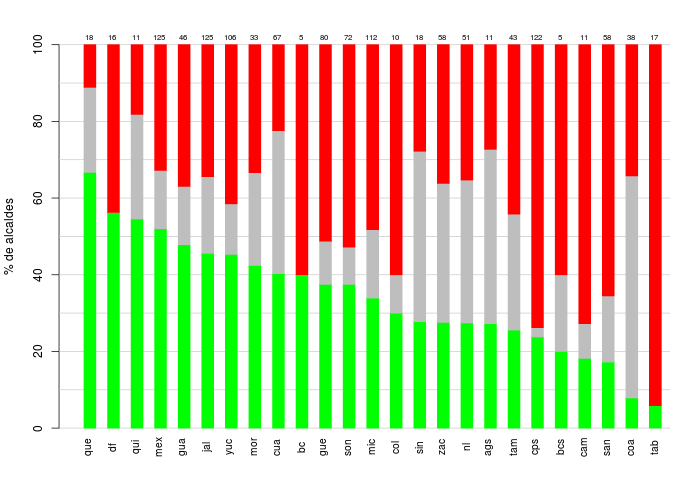

El 6 de junio se renovarán 1,921 gobiernos municipales en las urnas. Esta nota describe la ambición estática entre ocupantes de las presidencias municipales.
Hay 292 alcaldes que no pudieron aspirar a la reelección consecutiva este año porque la constitución de sus estados prevé que puedan hacerlo hasta 2024. Es el caso en los municipios de Nayarit, Tlaxcala y Veracruz. En lo restante, excluiré los alcaldes de estos estados de las cuentas. Quité también los casos de Oaxaca y Puebla (\(N = 370\)) porque hay un gran número de registros faltantes en ambos estados.
De los 1,628 alcaldes restantes, 34 por ciento aparecerán en la boleta en busca de la reelección. La proporción de quienes se retiraron de la contienda es mayor, alcanza 39 por ciento. La desventaja de los partidarios de la reelección, además de leve, puede matizarse. Hubo también 19 por ciento de ocupantes impedidos constitucionalmente de renominarse por haberse reelegido los comicios pasados. La constitución federal aún proscribe un tercer mandato consecutivo en los gobiernos unicipales—una limitación que puede y debería relajarse. Con esta quinta parte de los presidentes municipales que lo hizo en el pasado, 53 por ciento de los alcaldes que pueden quedarse han revelado ambición estática. Cifra nada despreciable tratándose de una institución aún joven.
El diagrama resume los patrones por estado. De verde se pinta el porcentaje estatal de presidentes municipales que compiten actualmente por la reelección consecutiva. De gris, los que no pueden reelegirse otra vez más. Y de rojo los que abandonaron la contienda. Y la cifra de arriba reporta el número de alcaldes que componen el 100 por ciento de la columna.

Figura 1: Alcaldes en la boleta, los impedidos y los retirados en 2021. Fuente: investigación propia.
Aunque varían sustancialmente entre sí, todos los estados tienen alcaldes en la boleta—con uno solo, Tabasco estuvo a punto de ser la excepión. En términos relativos, hay nueve estados con 40 por ciento o más de sus ocupantes municipales en la boleta: Querétaro alcanza 67 por ciento; Ciudad de México, Quintana Roo y Estado de México sobrepasan 50; Guanajuato, Jalisco, Yucatán, Morelos, Chihuahua y Baja California sobrepasan 40.
Llama la atención el bloque adyacente de Sinaloa, Zacatecas, Nuevo León y Aguascalientes. Los cuatro tienen barras grises grandes. Sumadas a la base verde, elevan la proporción de políticos que quieren o han querido (y podido) reelegirse.
El desglose partidista revela a PAN y PRI con, todavía, el mayor número de municipios (aunque no los más grandes, en 2018 Morena arrasó en las ciudades). Morena parecería haber sobrepuesto su desconfianza expresada a la reelección, 45 por ciento de sus ocupantes la están buscando. Sólo 2 por ciento de sus ambiciosos están en la banca por segundo mandato, mientras que los otrora partidos mayores tienen una cuarta parte en la banca. Esto debería operar en favor del partido del presidente.
| partido | ocupante en la boleta | segunto mandato | silla suelta (retirado) | total | N |
|---|---|---|---|---|---|
| pan | 33 | 27 | 40 | 100 | 383 |
| pri | 31 | 26 | 43 | 100 | 335 |
| morena | 45 | 2 | 52 | 100 | 266 |
| pvem | 34 | 16 | 50 | 100 | 74 |
| prd | 33 | 28 | 39 | 100 | 54 |
| pna | 37 | 17 | 46 | 100 | 46 |
| mc | 48 | 17 | 36 | 100 | 42 |
| pt | 33 | 17 | 50 | 100 | 6 |
| pes | 100 | 0 | 0 | 100 | 1 |
| otros | 26 | 3 | 71 | 100 | 31 |
| independiente | 55 | 20 | 25 | 100 | 20 |
| compite | segundo mandato | se retiró | ? | Total | |
|---|---|---|---|---|---|
| ags | 3 | 5 | 3 | 0 | 11 |
| bc | 2 | 0 | 3 | 0 | 5 |
| bcs | 1 | 1 | 3 | 0 | 5 |
| cam | 2 | 1 | 8 | 0 | 11 |
| coa | 3 | 22 | 13 | 0 | 38 |
| col | 3 | 1 | 6 | 0 | 10 |
| cps | 29 | 3 | 90 | 0 | 122 |
| cua | 27 | 25 | 15 | 0 | 67 |
| df | 9 | 0 | 7 | 0 | 16 |
| gua | 22 | 7 | 17 | 0 | 46 |
| gue | 30 | 9 | 41 | 0 | 80 |
| jal | 57 | 25 | 43 | 0 | 125 |
| mex | 65 | 19 | 41 | 0 | 125 |
| mic | 38 | 20 | 54 | 0 | 112 |
| mor | 14 | 8 | 11 | 0 | 33 |
| nl | 14 | 19 | 18 | 0 | 51 |
| oax | 3 | 58 | 10 | 82 | 153 |
| pue | 90 | 0 | 69 | 58 | 217 |
| que | 12 | 4 | 2 | 0 | 18 |
| qui | 6 | 3 | 2 | 0 | 11 |
| san | 10 | 10 | 38 | 0 | 58 |
| sin | 5 | 8 | 5 | 0 | 18 |
| son | 27 | 7 | 38 | 0 | 72 |
| tab | 1 | 0 | 16 | 0 | 17 |
| tam | 11 | 13 | 19 | 0 | 43 |
| yuc | 48 | 14 | 44 | 0 | 106 |
| zac | 16 | 21 | 21 | 0 | 58 |
| Total | 548 | 303 | 637 | 140 | 1628 |